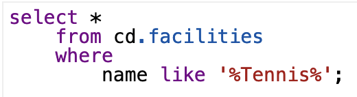
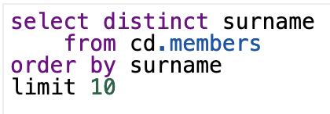
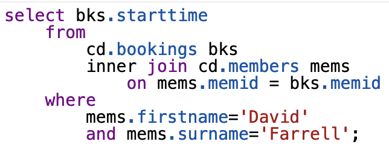
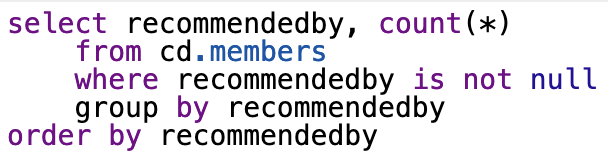

Submission Exercise 4
SQL Commands with pgexercises.com
Retrieve specific columns from a table:
Control which rows are retrieved:
Basic string searches:
Removing duplicates, and ordering results:
Join:
Count:
Aggregate Count:
String Search:
Case-Insensitive Search:
Entity Relationship diagram designed based on the data characters.csv and works.csv
- Square = Entity
- Ellipse = Attribute
- Underlined = ID, Key
- Diamond = Relationship Entity
- star and 1 = Cardinality of relationships -> so here many-to-one
Answers to Questions about Data
Which characters say only one word?
- Second Senator
- Thieves
- Third Soldier
In which play does a fairy named Mustardseed appear?
- A Midsummer Night's Dream
Do clowns appear more often in comedies or in tragedies?
genre, count:
- tragedy: 5
- comedy: 2
Therefore clowns appear more often in tragedies.